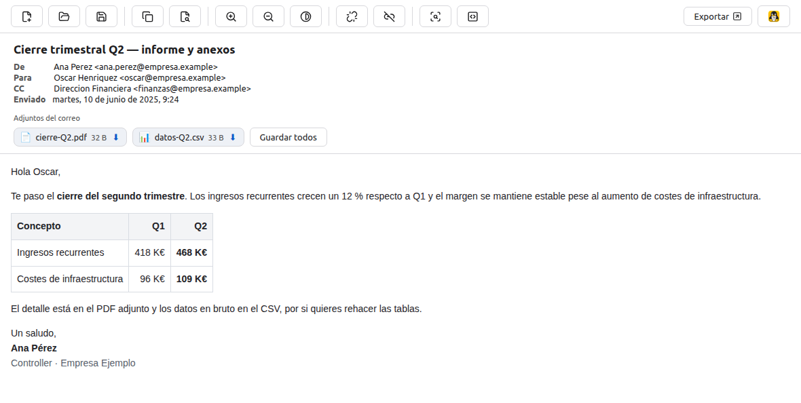

MsgEater
Abre correos .msg sospechosos sin ejecutar su contenido y sin que salgan de tu equipo. Open suspicious .msg email without running its content and without it leaving your machine.
Linux y macOS · .msg, .eml, .emlx · software libre (GPL-3.0)
Linux and macOS · .msg, .eml, .emlx · free software (GPL-3.0)
Un correo hostil, visto por dentro A hostile email, seen from the inside
Las capturas son de un mensaje de phishing de ejemplo, con sus cabeceras reales de suplantación. Nada se ejecuta al abrirlo. These are from an example phishing message, with real spoofing headers. Nothing runs when you open it.

Received como línea de tiempo, avisando de que los primeros saltos los puede inventar quien envía.Delivery route. The Received chain as a timeline, warning that the sender can fabricate the earliest hops.Por qué existeWhy it exists
En Linux y macOS no hay forma nativa de abrir un .msg. Y cuando el
correo es justo el que sospechas, abrirlo en un cliente normal es la peor idea.
Linux and macOS have no native way to open a .msg. And when the
message is precisely the one you distrust, opening it in a normal client is the worst idea.
Nada sale de tu equipoNothing leaves your machine
Cero tráfico saliente automático, bloqueado en la capa de sesión y
comprobable con tcpdump. Sin telemetría.
Zero automatic outbound traffic, blocked at the session layer and
verifiable with tcpdump. No telemetry.
El contenido no se ejecutaThe content never runs
El cuerpo se sanitiza con DOMPurify y se aísla en un iframe sin permiso para ejecutar scripts, con CSP restrictiva. The body is sanitised with DOMPurify and isolated in an iframe with no permission to run scripts, under a restrictive CSP.
Triaje de phishingPhishing triage
Autenticación fallida, suplantación del remitente, homografías IDN, acortadores, macros y adjuntos ejecutables — explicados, no puntuados. Failed authentication, sender spoofing, IDN homographs, URL shorteners, macros and executable attachments — explained, not scored.
Píxeles de rastreo bloqueadosTracking pixels blocked
Las imágenes remotas no se cargan solas. Si pides una, primero se explica qué revela: tu IP y cuándo lo leíste. Remote images never load on their own. Ask for one and it first explains what that reveals: your IP and when you read it.
Indicadores listos para reportarIndicators ready to report
URLs, dominios, IPs y direcciones extraídos y copiables, más el SHA-256 de cada adjunto para consultarlo por hash, sin subir el archivo. URLs, domains, IPs and addresses extracted and copyable, plus the SHA-256 of each attachment to look it up by hash, without uploading the file.
Nueve formatos de exportaciónNine export formats
PDF, EML, PNG, HTML, TXT, Markdown, MHT, JSON y ZIP con los adjuntos — para adjuntar a un ticket o archivar el caso. PDF, EML, PNG, HTML, TXT, Markdown, MHT, JSON and ZIP with attachments — to attach to a ticket or archive the case.
También sin ventanaAlso without a window
Revisar un buzón entero no se hace correo a correo. El mismo análisis corre en la terminal, sin servidor gráfico: por SSH, en un contenedor o desde un cron. Triaging a whole mailbox is not done one message at a time. The same analysis runs in the terminal with no display server: over SSH, in a container or from cron.
$ msgeater --analyze --json *.eml | jq -r '.[] | select(.signals|length > 0) | .file' verifica-tu-cuenta.eml $ msgeater --analyze verifica-tu-cuenta.eml Señales de riesgo (8) [alta] La autenticación del remitente falló (SPF=fail)… [alta] El adjunto «incidencia-4471.docm» contiene macros (código VBA)… [media] Al responder, la respuesta iría a otro dominio… $ echo $? 1 # 0 sin señales · 1 con señales · 2 no se pudo analizar
$ msgeater --analyze --json *.eml | jq -r '.[] | select(.signals|length > 0) | .file' verify-your-account.eml $ msgeater --analyze verify-your-account.eml Risk signals (8) [high] Sender authentication failed (SPF=fail)… [high] The attachment "incident-4471.docm" contains macros (VBA code)… [medium] Replying would send your answer to a different domain… $ echo $? 1 # 0 no signals · 1 signals found · 2 could not analyse
InstalarInstall
Una línea en Linux y macOS. El script detecta el sistema, elige el paquete adecuado y actualiza si ya lo tenías. One line on Linux and macOS. The script detects your system, picks the right package and updates an existing install.
bash -c "$(curl -fsSL https://raw.githubusercontent.com/oscarhenriquezg/msgeater/main/scripts/install.sh)"
Linux: .deb o .rpm según tu distribución, con AppImage
como alternativa sin root. macOS: MsgEater.app en ~/Applications.
¿Prefieres no ejecutar un script? Descarga
los instaladores y verifícalos.
Linux: .deb or .rpm depending on your distribution, with
AppImage as a root-free fallback. macOS: MsgEater.app in ~/Applications.
Rather not run a script? Download
the installers and verify them.
Qué puedes comprobar túWhat you can check yourself
Una aplicación para abrir correo hostil pide más confianza de lo normal. Estas son las comprobaciones que puedes hacer sin creerte nada. An app for opening hostile email asks for more trust than usual. These are the checks you can run without taking anyone's word for it.
Procedencia firmadaSigned provenance
Cada release lleva una attestation Sigstore que ata el binario al commit
y al workflow que lo construyó, más SHA256SUMS y un SBOM en SPDX.
Every release carries a Sigstore attestation binding the binary to the commit
and workflow that built it, plus SHA256SUMS and an SPDX SBOM.
Revisión independienteIndependent review
OpenSSF Scorecard y el badge de OpenSSF Best Practices evalúan el repositorio desde fuera; CodeQL analiza cada cambio. OpenSSF Scorecard and the OpenSSF Best Practices badge assess the repository from outside; CodeQL analyses every change.
Escaneo antivirusAntivirus scan
Los instaladores de cada release se escanean con ~70 motores en VirusTotal, y el resultado se publica en el README. Each release's installers are scanned with ~70 engines on VirusTotal, and the result is published in the README.
Todo el código a la vistaAll the code in the open
GPL-3.0. Puedes leerlo, construirlo tú mismo y comparar el hash con el publicado. GPL-3.0. Read it, build it yourself and compare the hash with the published one.
Y lo que no. Ninguna de esas comprobaciones certifica que el programa sea seguro, y el análisis de un correo tampoco: que no aparezcan señales significa que no se detectó ninguna de las que se comprueban, no que el mensaje sea inofensivo. Por eso la aplicación nunca muestra un indicador «en verde». And what they don't. None of those checks certifies the program is safe, and neither does analysing a message: no signals means none of the checked signals were detected, not that the message is harmless. That is why the app never shows an "all clear" indicator.